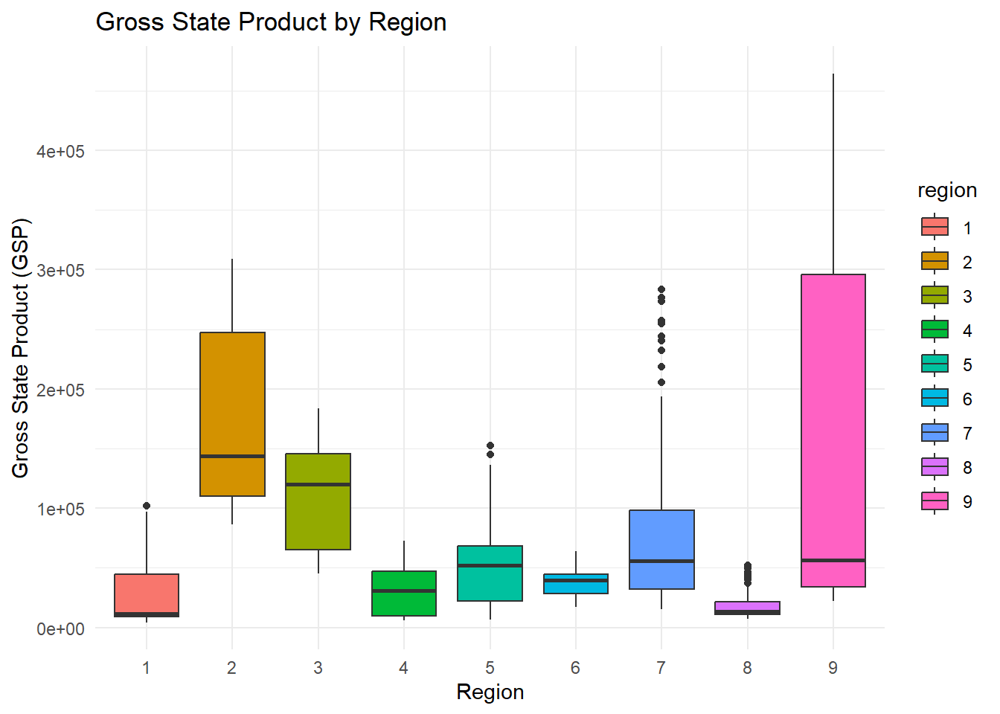
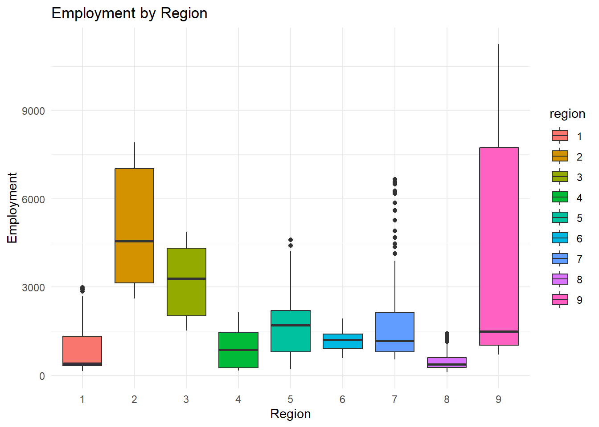
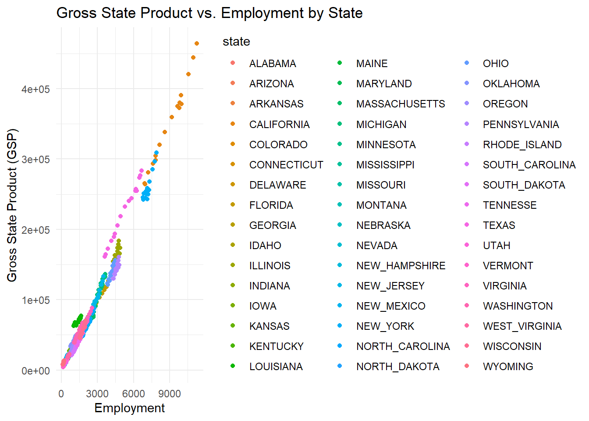

This presentation demonstrates panel data modeling using the plm package in R. We will use the Produc dataset, which contains data on gross state product in the United States.
The Produc dataset contains the following variables:
state: State name
year: Year
region: Region
pcap: Real per capita personal consumption expenditures
hwy: Real per capita “highway” expenditure
water: Real per capita “water” expenditure
util: Real per capita “utility” expenditure
pc: Real per capita net income
gsp: Real gross state product
emp: Employment
unemp: Unemployment rate
Ploting GSP over Time
ggplot(Produc, aes(x = year, y = gsp, color = state)) +geom_line() +theme_minimal() +labs(title ="Gross State Product over Time",x ="Year",y ="Gross State Product (GSP)")
ggplot(Produc, aes(x = region, y = gsp, fill = region)) +geom_boxplot() +theme_minimal() +labs(title ="Gross State Product by Region",x ="Region",y ="Gross State Product (GSP)")

Boxplot of Employment by Region
ggplot(Produc, aes(x = region, y = emp, fill = region)) +geom_boxplot() +theme_minimal() +labs(title ="Employment by Region",x ="Region",y ="Employment")

Scatterplot of GSP vs. Employment by State
ggplot(Produc, aes(x = emp, y = gsp, color = state)) +geom_point() +theme_minimal() +labs(title ="Gross State Product vs. Employment by State",x ="Employment",y ="Gross State Product (GSP)")

Unit Root Tests
# Selecting only numeric columns for the ADF testnumeric_cols <- Produc %>%select_if(is.numeric) |>select( -year)# Applying unit root test for panel dataadf_test <-sapply(numeric_cols, function(x) adf.test(x)$p.value)
Warning in adf.test(x): p-value smaller than printed p-value
Warning in adf.test(x): p-value smaller than printed p-value
Warning in adf.test(x): p-value smaller than printed p-value
Warning in adf.test(x): p-value smaller than printed p-value
Warning in adf.test(x): p-value smaller than printed p-value
Warning in adf.test(x): p-value smaller than printed p-value
Warning in adf.test(x): p-value smaller than printed p-value
Warning in adf.test(x): p-value smaller than printed p-value
adf_test
pcap hwy water util pc gsp emp unemp
0.01 0.01 0.01 0.01 0.01 0.01 0.01 0.01
Fit Pooled OLS Model
Pooled OLS model
pooled_ols <-plm(gsp ~ emp + unemp + pc, data = Produc, model ="pooling")summary(pooled_ols)
Pooling Model
Call:
plm(formula = gsp ~ emp + unemp + pc, data = Produc, model = "pooling")
Balanced Panel: n = 48, T = 17, N = 816
Residuals:
Min. 1st Qu. Median 3rd Qu. Max.
-26661.5 -4068.9 1503.0 3784.0 40850.0
Coefficients:
Estimate Std. Error t-value Pr(>|t|)
(Intercept) -3.8305e+03 8.0097e+02 -4.7824 2.057e-06 ***
emp 3.0144e+01 3.2554e-01 92.5964 < 2.2e-16 ***
unemp -3.4768e+02 1.1538e+02 -3.0133 0.002665 **
pc 2.4878e-01 1.0142e-02 24.5292 < 2.2e-16 ***
---
Signif. codes: 0 '***' 0.001 '**' 0.01 '*' 0.05 '.' 0.1 ' ' 1
Total Sum of Squares: 3.9905e+12
Residual Sum of Squares: 4.2567e+10
R-Squared: 0.98933
Adj. R-Squared: 0.98929
F-statistic: 25103.7 on 3 and 812 DF, p-value: < 2.22e-16
Fixed Effects Model
fixed_effects <-plm(gsp ~ emp + unemp + pc, data = Produc, model ="within")summary(fixed_effects)
Oneway (individual) effect Within Model
Call:
plm(formula = gsp ~ emp + unemp + pc, data = Produc, model = "within")
Balanced Panel: n = 48, T = 17, N = 816
Residuals:
Min. 1st Qu. Median 3rd Qu. Max.
-12824.764 -912.582 -50.175 720.388 20701.742
Coefficients:
Estimate Std. Error t-value Pr(>|t|)
emp 34.611677 0.926593 37.3537 < 2.2e-16 ***
unemp -289.266470 59.882397 -4.8306 1.645e-06 ***
pc 0.134576 0.021505 6.2579 6.495e-10 ***
---
Signif. codes: 0 '***' 0.001 '**' 0.01 '*' 0.05 '.' 0.1 ' ' 1
Total Sum of Squares: 1.3289e+11
Residual Sum of Squares: 5628300000
R-Squared: 0.95765
Adj. R-Squared: 0.95488
F-statistic: 5765.77 on 3 and 765 DF, p-value: < 2.22e-16
Random Effects Model
random_effects <-plm(gsp ~ emp + unemp + pc, data = Produc, model ="random")summary(random_effects)
Oneway (individual) effect Random Effect Model
(Swamy-Arora's transformation)
Call:
plm(formula = gsp ~ emp + unemp + pc, data = Produc, model = "random")
Balanced Panel: n = 48, T = 17, N = 816
Effects:
var std.dev share
idiosyncratic 7357308 2712 0.132
individual 48523782 6966 0.868
theta: 0.906
Residuals:
Min. 1st Qu. Median 3rd Qu. Max.
-12211.93 -892.86 152.54 872.54 20739.86
Coefficients:
Estimate Std. Error z-value Pr(>|z|)
(Intercept) -4347.08517 1193.82256 -3.6413 0.0002712 ***
emp 33.06917 0.73227 45.1600 < 2.2e-16 ***
unemp -331.96706 57.93287 -5.7302 1.003e-08 ***
pc 0.16804 0.01800 9.3353 < 2.2e-16 ***
---
Signif. codes: 0 '***' 0.001 '**' 0.01 '*' 0.05 '.' 0.1 ' ' 1
Total Sum of Squares: 1.6699e+11
Residual Sum of Squares: 6012600000
R-Squared: 0.96399
Adj. R-Squared: 0.96386
Chisq: 21740.2 on 3 DF, p-value: < 2.22e-16
F test for individual effects
data: gsp ~ emp + unemp + pc
F = 1.1113, df1 = 47, df2 = 765, p-value = 0.2856
alternative hypothesis: significant effects
Robustness Check with Clustered Standard Errors
clustered_se <-coeftest(fixed_effects, vcov =vcovHC(fixed_effects, type ="HC1"))clustered_se
t test of coefficients:
Estimate Std. Error t value Pr(>|t|)
emp 34.611677 2.731771 12.6701 < 2e-16 ***
unemp -289.266470 123.251462 -2.3470 0.01918 *
pc 0.134576 0.069376 1.9398 0.05277 .
---
Signif. codes: 0 '***' 0.001 '**' 0.01 '*' 0.05 '.' 0.1 ' ' 1
Summary
This presentation demonstrated panel data modeling using the plm package in R. We covered data exploration, unit root testing, fitting pooled, fixed, and random effects models, and comparing these models using statistical tests.
These results can help us understand the relationships between gross state product and other economic indicators while accounting for individual state effects.
From this analysis, we can conclude that the fixed effects model is preferred over the random effects model based on the Hausman test results. The pooled OLS model is not appropriate due to the presence of individual-specific effects.